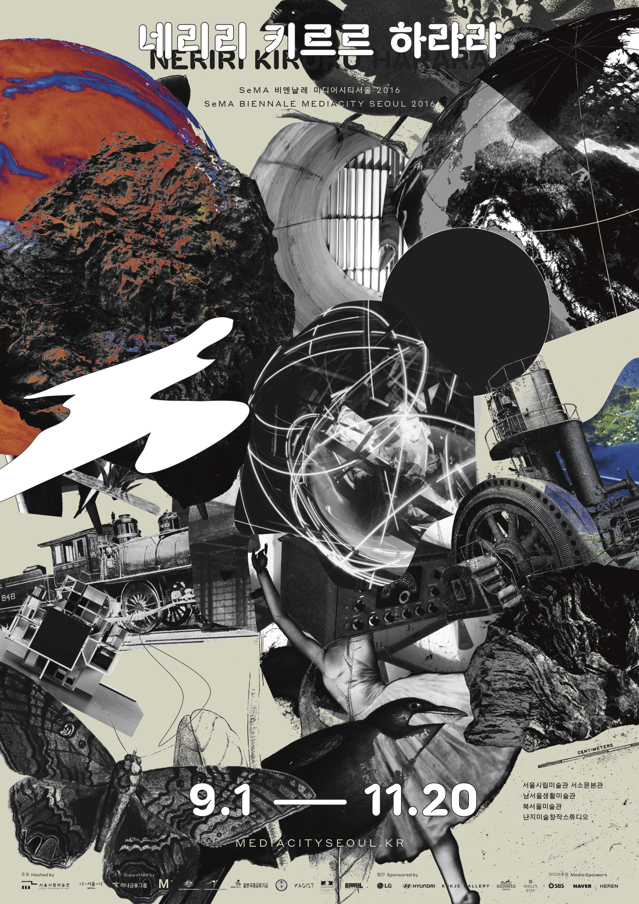
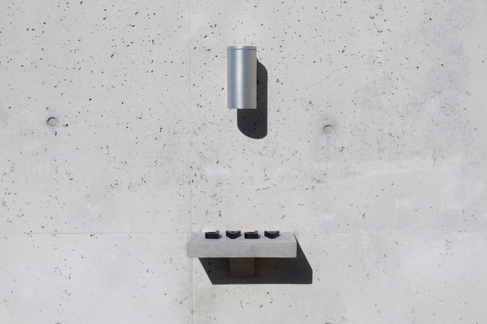
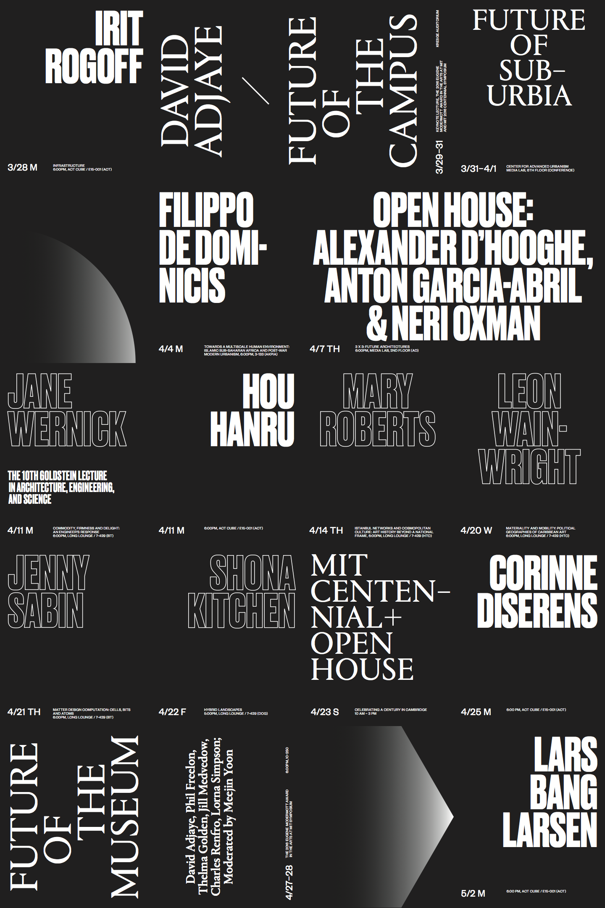
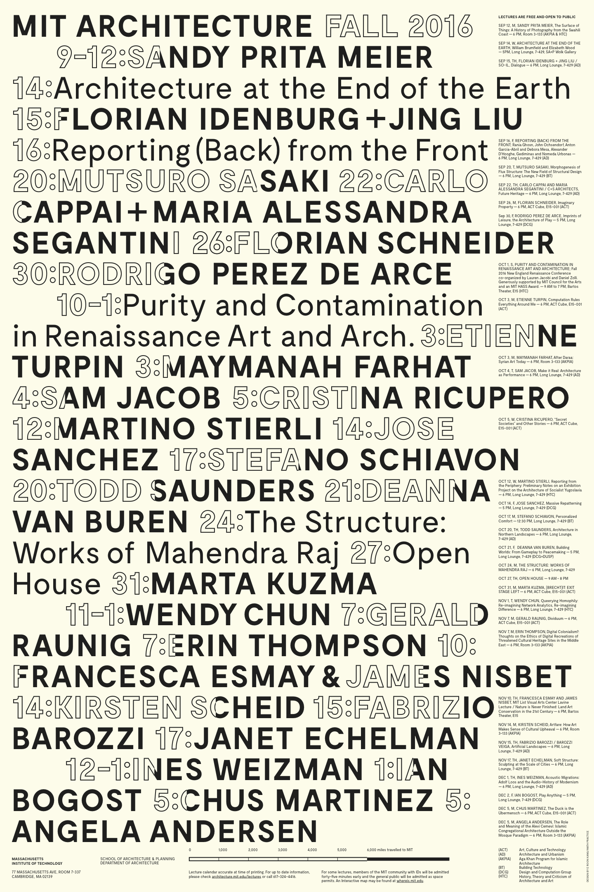

adlkfsdlfkn  SeMA Biennale Mediacity Seoul, 2016 APAP Identity, 2014  APAP Identity, installation, 2014 Google Fonts + Korean, 2019  MIT Architecture Fall 2016 Lecture Series, 2016  MIT Architecture Spring 2016 Lecture Series, 2016
 APAP Identity, 2014
APAP Identity, 2014